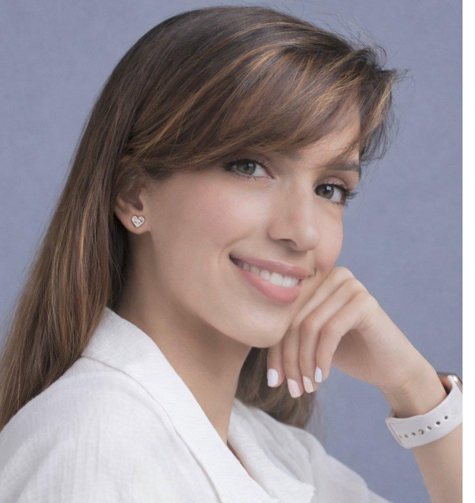
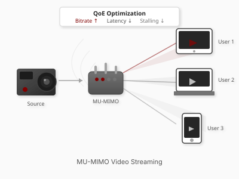
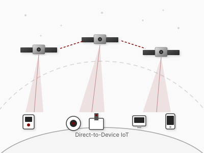
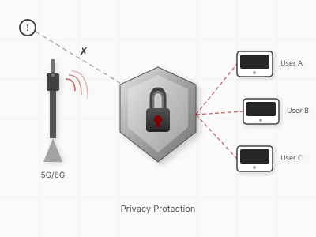
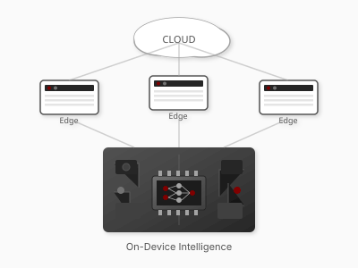
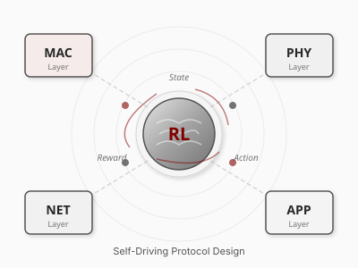

Research Scholar Fellow

Research Scholar Fellow | UC Berkeley Sky Computing Lab
I am a wireless and networked systems researcher currently serving as a Research Scholar Fellow at UC Berkeley's Sky Computing Lab, where I contribute to the SkyPilot project with Professor Ion Stoica. I have been fortunate to work with exceptional researchers throughout my journey: Prof. Tamer Nadeem at Virginia Commonwealth University during my PhD, Prof. Sylvia Ratnasamy and Prof. Scott Shenker at UC Berkeley's NetSys Lab, Dr. Juan A. Fraire and Prof. Hervé Rivano at INRIA Lyon, Prof. Franck Rousseau at LIG Lab (Université Grenoble Alpes), Prof. Gil Zussman at Columbia University's Wireless and Mobile Networking Lab, and industry leaders at Qualcomm, Skylark Wireless LLC, and Bell Labs.
I work on networked systems and wireless communication. I build self-driving systems, where latency, efficiency, safety, and privacy hold by design. My recent projects focus on LLM serving across compute tiers, 5G data-plane attack detection, and direct-to-cell satellite handover. Together, they span the on-device, edge, cloud, and satellite stack.
The commitment underneath the work is that systems should make decisions on predicted future state and prove bounds against the prediction error, rather than react to measured present state and bound average-case performance.
Some of my work has shipped into production. At Skylark Wireless, my MU-MIMO scheduler improved spectral efficiency by 23 percent and serves millions of users on commercial 5G fixed-wireless deployments. At Qualcomm, my Wi-Fi 7 protocol contributions are integrated into commercial chipsets. My open-source tools (SIMSAT, SATMetrics, OffloadSim) are used by satellite operators and academic groups evaluating LEO constellations.
Wireless protocols across Wi-Fi 4 through Wi-Fi 7 and Wi-Fi 8 drafts. Cellular and 5G NR across 3GPP Releases 15 through 18, with O-RAN Near-RT RIC rApp development. Direct-to-cell LEO satellite systems across Starlink, Kuiper, OneWeb, and Globalstar architectures. Multi-tier LLM serving across device, edge, cloud, and satellite compute. SkyPilot, vLLM, Triton, and Ray for inference orchestration. PyTorch and JAX for learning. StarryNet, ns-3, and MATLAB for protocol simulation. C, C++, Python, Rust, and Go for systems code.
My work has been recognized by the N2Women Top 10 Rising Star Award, the NCWIT Collegiate Award, and the Heidelberg Laureate Forum, and supported by the Schlumberger Foundation and HIDA (Germany).
Our VIN2VICTIM paper, in collaboration with Rivian, was accepted at USENIX VehicleSec 2026.
Our paper "CacheCatalyst" has been accepted to USENIX NSDI 2025.
Our paper "Balancify" won Best Paper Award and Best Contribution Award at ACM Student Workshop CoNEXT 2025.
Co-chaired ACM CoNEXT Student Workshop and gave a talk on "AI for Networks and Networks for AI".
Our three papers were presented at MobiCom'25.
Invited as Young Researcher to the 10th HLF in Germany.
Research on datacenter microbursts accepted to ACM SIGMETRICS 2025.
Received Best Paper Award for "Role of Machine Learning in Satellite IoT".
Talk on "Privacy and Security Challenges in Space Terrestrial Networks".
Delivered talks at IEEE S&P, USENIX SOUPS/Security, Microsoft BlueHat, and MSR on 5G privacy.
Received grant from Helmholtz Information and Data Science Academy, Germany.

Inference systems that anticipate connectivity, thermal, and load shifts across device, edge, cloud, and satellite tiers. Routing controllers with bounded SLO violations.

LEO satellite networking for direct-to-cell connectivity. Predictive handover, jurisdictional compliance, and deferral-aware delivery using public orbital data.

Privacy and security primitives derived from cross-layer structure in 5G NR and Wi-Fi 7. Spec-grounded attack detection that generalizes across 3GPP Releases.

Reinforcement learning with provable safety bounds. Decision-time constraint masking, phase-transition theory, and distribution-shift envelopes for shared infrastructure.

Compositional design of wireless protocols. Modular decomposition with learned or spec-extracted policies. The foundation of the self-driving systems line.
Interested in collaboration, research discussions, or speaking opportunities?